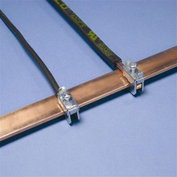
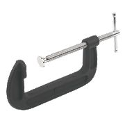

hi there . would the SCT-013-000 I have be bad. i bought one. and i it always giving bad result. ., it never gives a zero read even if the clamp is not connected to any thing. . plus it seam to be measuring at a scale 10 times higher then what it suppose to be. ie if a plug in a 20 watt it registers as a 180watt, if it a 10 amp heater it showing a 100 amps and so on would that be a clamp issue or a resistor issue . i double check them all they are correct from the colour code . what i notice now if a pull the cap it sits a or around zero, but with current going throw it is even farther off. as it it now sits around 500 - 600 watts for the same 20 watt glue gun.
any help to point me in the right direction ?
Re: Would i have a bad sct013 100amp at 50mA
You do not have a clamp. These are clamps, 2 busbar clamps on the left, a G-clamp on the right.

Note the tensioning screws.
You have a split core current transformer. There are several "questions" on the FAQs page that address at least one aspect of your problem. You won't read a 20 W glue gun accurately with a CT that is designed for 100 A maximum current. According to my calculator, 20 W equates to about 80 mA. That is 0.08% of full scale. If, given a sensible current - and by that I mean at least 10 A - it reads ten times what it should, then most likely, you have the wrong value of burden resistor, or the wrong calibration constant set.
If you connect your multimeter to the CT, with your 10 A load you should read 5 mA. If you do, then there is probably nothing wrong with your CT.
Can you explain what you mean by "what i notice now if a pull the cap it sits a or around zero"? Do you mean that you unclip the latch, separate the cores and remove the CT from its cable? You will always get a low and completely wrong measurement if the ferrite cores are not perfectly mated with each other.
How are you using your CT?
Re: Would i have a bad sct013 100amp at 50mA
okay, no need to be snarky in the reply. but I figured it out and posted that yesterday ( do not know where that post disappeared too), that it turned out that I had to use a different burden resistor.. I originally built it to the 33 ohm at 60.x but nothing worked then I found a page that listed different ohm resistors and setting . so i tried them turns out 120 ohm (16.x) ) worked like a charm
http://openenergymonitor.org/emon/buildingblocks/calibration
for low wattage I added some code that trimmed to zero. as it was bouncing around 10 watts at zero
but thank you for the reply
greatly appreciated